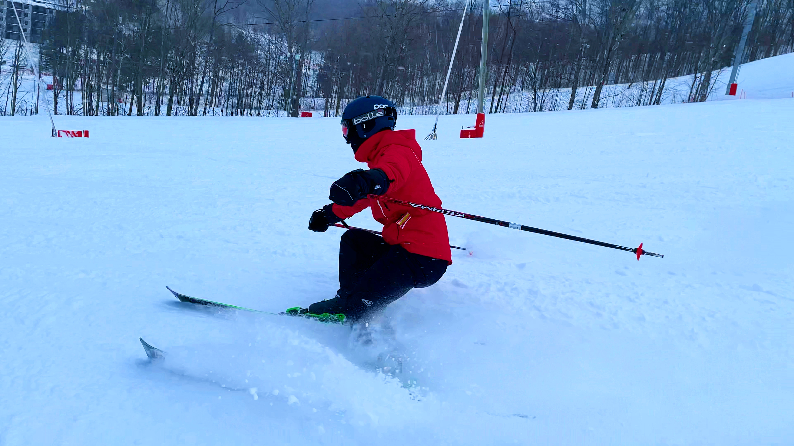

Here is a collection of things I enjoy doing in my free time. They appeal to different aspects of myself, some are more mentally stimulating than others, while some are purely physically demanding. These interests help me balance my time, and prevent me from doing one specific thing for too long. In short, they are imprtant to me.
I grew up playing a variety of sports which have since turned into hobbies, giving me a chance to exercise and channel my competitiveness in a physical environment. Soccer and skiing were the two I was first exposed to and in the last several years, I have started playing basketball and tennis.
My brother took a picture of me while skiing so we could discuss technique. This is the result of that.
Films have always fascinated me, and I have seen a great deal of them, too. I enjoy a wide variety of genres, and take a keen interest in stylistic techniques. Technologies and new methods are frequently developed to achieve certain visual effects, and the results are usually quite stunning. There is a lot more engineering involved in filmmaking than meets the eye and when combined with artistic vision, some cool things can happen.
Reading, I find, is a therapeutic way to learn without realizing you are learning. I started avidly reading in elementary school and continue to this day. Books provide a point of discussion with oneself and others, and it is very interesting talking to someone about a mutually read book. We each often percieve very different things, despite reading the exact same thing. I have also noticed I have transitioned from fiction to more non-fiction, something I assume comes with age and maturity, but never abandoning fiction.
Books I have recently read:
I have also recently started listening to podcasts. They provide a change of pace that music does not offer. The two podcasts I have listened to most are Intelligence Squared and In Our Time, each with hundreds of episodes. They discuss topics I find thoughtprovoking and that need more attention; aspects and impacts of science that are largely unknown, for instance. I highly recommend listening to an episode of either, I am certain you will find one that intrigues you.